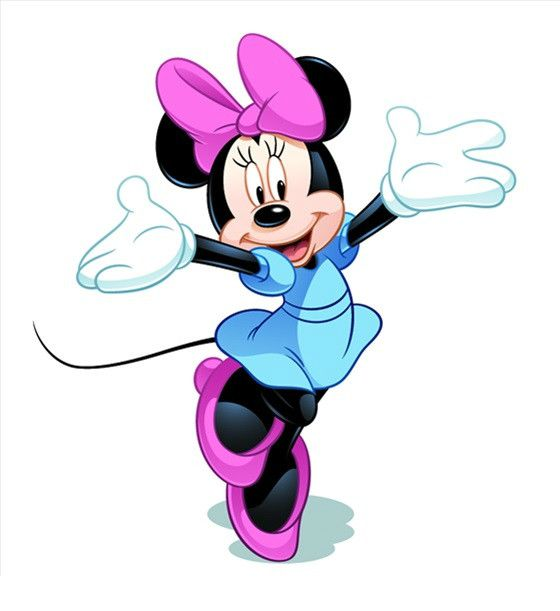

|  | 回到首页米妮是米奇的女朋友和最好的伙伴，也是华特迪士尼公司里最美丽可爱的女角色。虽然米妮平时很安静，甚至经常害羞，但是当她遇到坏蛋，特别是要谋害米奇的那些坏蛋的时候，她毫不手软，并且具备打击这些坏蛋的能力。米妮最好的朋友就是黛丝，她们经常在一起逛街，还有就是谈论米奇和唐老鸭，与黛丝相比，更加衬托了米妮的温柔与智慧。总的来说，米妮就是迪士尼设定的人们心中完美的女孩，聪明、温柔、安静、可爱而美丽。 米妮的经典衣着是红色（或是粉色）带白斑点连衣裙，或者只着蓝色或红色短裙和白色衬裙，穿同样颜色的鞋，戴同色的蝴蝶结。米妮最爱说的话“Why hello!”充满魅力和健康的米妮用她优美、偶然如鸟鸣般的颤音为妙妙屋带来了甜美的音乐。米妮作为米奇的女朋友在米老鼠的第一部动画片《疯狂的飞机》中就已经出现，米妮可人、温柔的个性在《米奇妙妙屋》中得到了延续。米妮是米奇的完美搭档，她与米奇一起解决问题，一起帮助朋友克服困难。事实上，米妮和米奇更像一对可爱的双胞胎，为所有人带来欢乐。 |